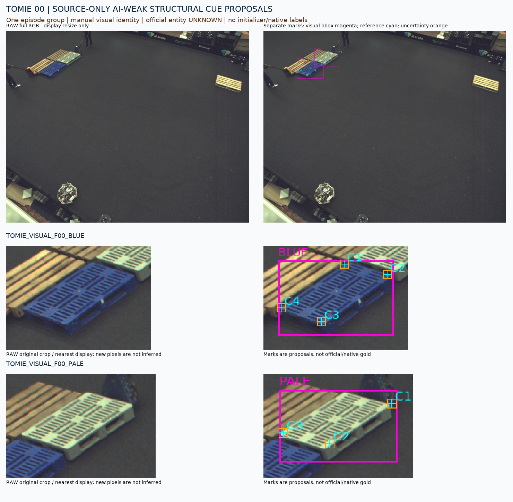
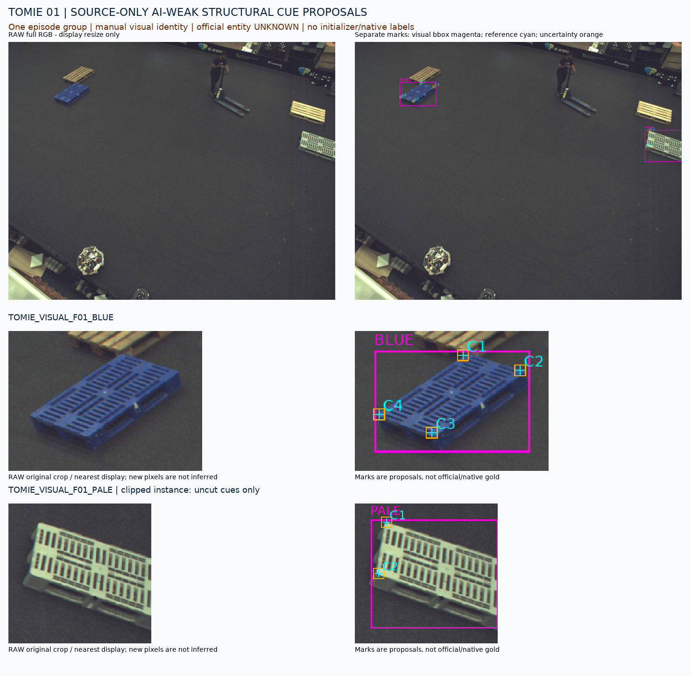
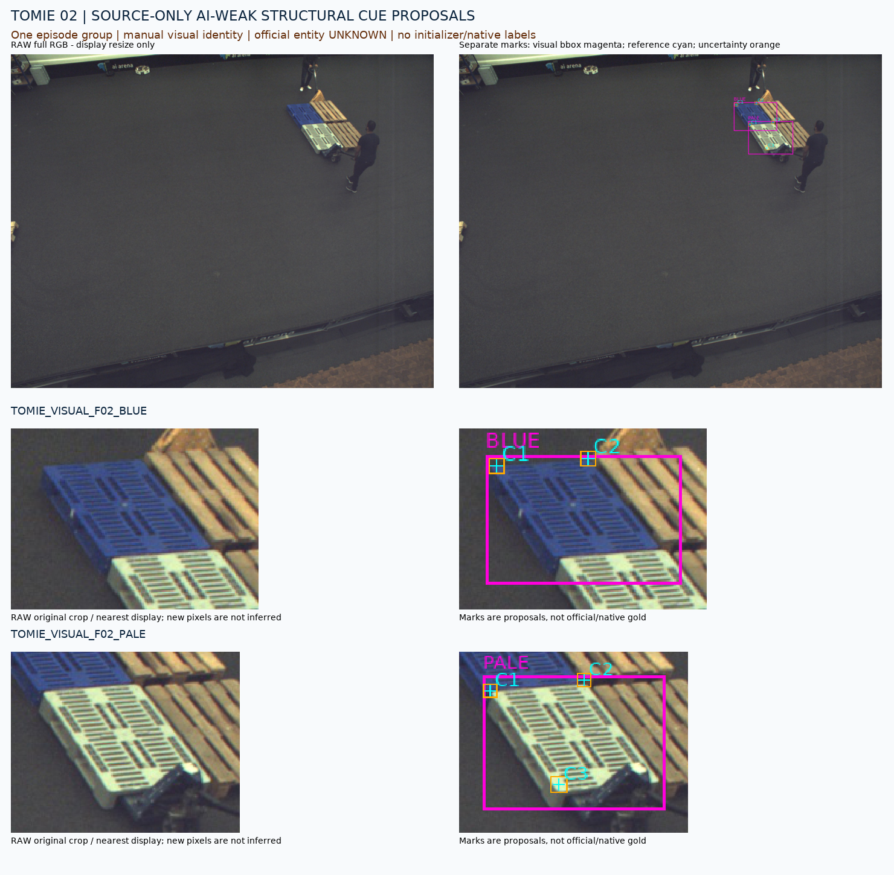
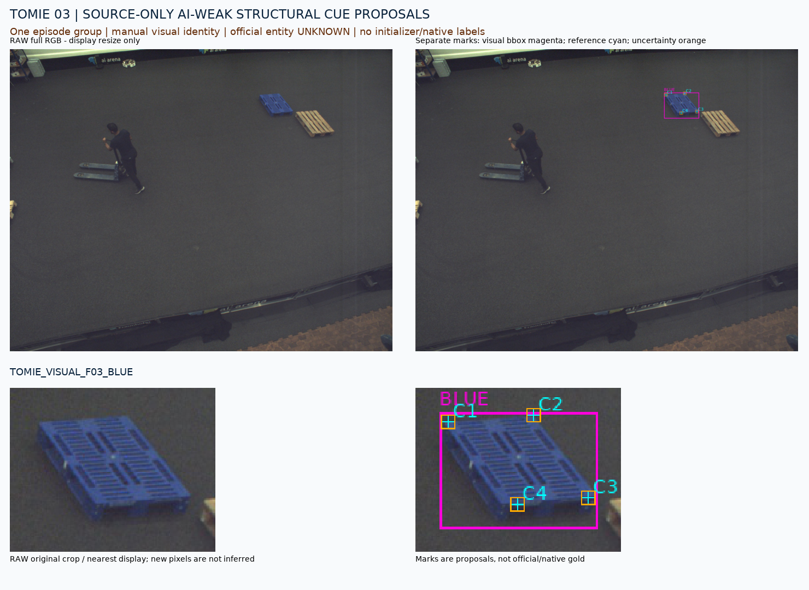
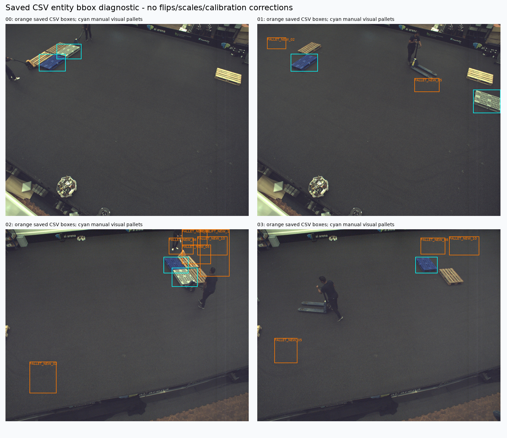

원본4장·시각 인스턴스7개·약한 visible 단서22개. 파란색 및 밝은색 성형형 외관이며, 공식 entity 연결과 native 대응은 UNKNOWN입니다. 동일 episode 전체는 한 development 그룹입니다. 원래 initializer q/L을 바꾸거나 학습을 실행하지 않았습니다.
색/재질 자체를 D로 부른 것이 아니라 외곽 rim/support 방향 전환이 실제 보이는 점만 제안했습니다. 잘린 끝·접촉/가림이 불명확한 점은 제외했습니다. 전체 물체가 보인다는 주장은 아닙니다.

위: 원본 전체 장면 / 별도 표시. 아래: 원래 native 좌표 관찰용 crop / 별도 uncertainty 표시. 모델 입력이나 공식 정답이 아닙니다.

위: 원본 전체 장면 / 별도 표시. 아래: 원래 native 좌표 관찰용 crop / 별도 uncertainty 표시. 모델 입력이나 공식 정답이 아닙니다.

위: 원본 전체 장면 / 별도 표시. 아래: 원래 native 좌표 관찰용 crop / 별도 uncertainty 표시. 모델 입력이나 공식 정답이 아닙니다.

위: 원본 전체 장면 / 별도 표시. 아래: 원래 native 좌표 관찰용 crop / 별도 uncertainty 표시. 모델 입력이나 공식 정답이 아닙니다.
저자 코드의 row/column/span 해석을 그대로 표시했습니다. 보이는 blue/pale 인스턴스와 이 raw 좌표의 대응을 인증할 수 없어 manual visual instance ID를 사용합니다. 좌표 반전·이동·entity 재배정은 하지 않았습니다.
